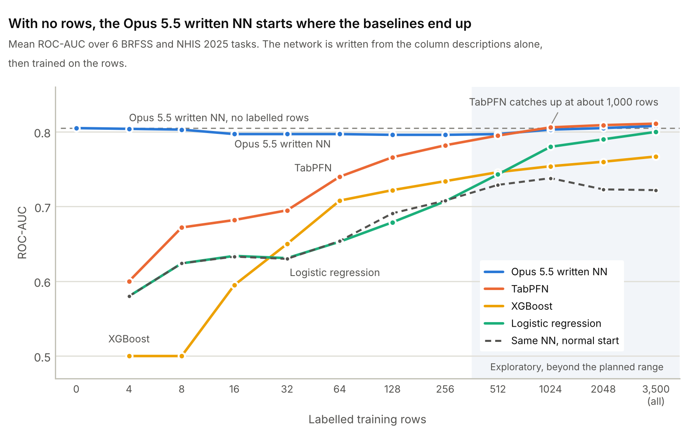

Each task here is a yes or no question about a person, such as whether a doctor has ever told them they have high blood pressure. The data comes from health surveys, where each row is one respondent, with their age, sex, income, smoking, other conditions and so on. A labelled row also has the answer. A model normally needs labelled rows to learn from before it can predict anything.
Claude Opus 5.5 got none. It only saw the column descriptions, and set every weight of a small neural network itself. That network does as well as logistic regression trained on 3,500 labelled rows. Logistic regression and XGBoost never catch up, even with all the data. TabPFN, a model built for small tables, does after about 1,000. The surveys are from 2025 and came out after Opus 5.5's training cutoff, so it can't have seen them.

TabPFN only pulls ahead with lots of data, finishing at 0.811 against 0.808 for the written network trained on the same 3,500 rows. XGBoost tops out at 0.767.
The dashed line is the same network trained the same way, from a normal random start. It does no better than logistic regression up to 256 rows and ends at 0.722 with all of them, so the head start comes from Opus 5.5's weights, not the architecture. Its training settings were fixed in advance and never tuned, so a tuned version would do better.
| With all 3,500 training rows | AUC |
|---|---|
| TabPFN | 0.811 |
| Opus 5.5 written NN, trained on them | 0.808 |
| Opus 5.5 written NN, no rows | 0.805 |
| Logistic regression | 0.800 |
| XGBoost | 0.767 |
| Same NN, normal start | 0.722 |
Earlier this month a group at MIT showed that frontier models can write the weights of small neural networks directly, with no training data or gradients, and that some of those networks beat agents trained with reinforcement learning. I wanted to know whether this works for the most common job in data science, predicting an outcome from a table, and how many labelled rows that knowledge is worth.
Most tabular benchmarks are online, so a model may simply remember them. In my pilot on the LLMTabBench suite (since renamed TabLens), Opus 5.5 could reproduce rows from 4 of the 16 datasets. So I built six tasks from surveys published after its June 2026 training cutoff, the CDC's BRFSS 2025 (released August 2026) and NHIS 2025 (released September 2026).
The rows are new, but the epidemiology isn't. I wrote down and hashed every test before any reply came back.
| Task, y = 1 if ever told | Survey | Share |
|---|---|---|
| High blood pressure | BRFSS | 42% |
| Diabetes | BRFSS | 16% |
| Depression | BRFSS | 22% |
| Arthritis | BRFSS | 34% |
| Anxiety disorder | NHIS | 19% |
| Feels lonely at least sometimes | NHIS | 27% |
5,000 respondents per task, about 25 features each (age, sex, income, smoking, other conditions). NHIS first asked about loneliness in 2024.
Given only the schema, Opus 5.5 writes a small network as JSON, in raw units, with a linear part and 16 hidden units.
Each hidden unit looks at a few columns, so it can encode a threshold or an interaction, such as risk rising more slowly with age after 65. The intercept c isn't written. It's fitted from the labelled rows, when there are any. Each task gets five networks, averaged. I then draw k labelled rows (4 to 256, five draws each), fit, and score AUC on 1,500 held-out rows.
Opus 5.5 also writes priors, a best guess of each column's effect and how sure it is. A logistic regression starts from those guesses and only moves as far as the data pushes it. Pooled with my pilot (11 more datasets), these priors beat TabPFN at 4 to 16 rows on 17 of 17 tasks, and on 13 of 13 without the memorised datasets.
One of the five networks for high blood pressure, exactly as it came back:
What these weights say about age, for a woman and a man with median BMI and every other column at its reference level. Log-odds relative to a woman of 18. Women catch up after 60 and pass men at about 78.
age_years: numeric, min 18, median 59, max 80, mean 55.9, sd 18.33, 63 distinct valuesWrite your network for this dataset: a linear part and exactly 16 units.
y = 1 if the respondent was ever told by a health professional that they have high blood pressure. You will never see any rows or labels.
You are an expert statistician with deep knowledge of the domain each dataset comes from.
You will be shown the schema of a tabular dataset with a binary target. You will never see any rows or labels.
Write down what you already know as a small neural network that predicts y on its own:
logit = c + sum_j a_j * x_j + sum_k out_k * relu(bias_k + sum_j w_kj * x_j)
with x in RAW units (per year, per point, or 0/1 for an indicator) and c fitted later from data (do not write c).
The network has a linear part and exactly 16 hidden units.
- "linear": the plain linear effects a_j, per one raw unit, holding the other columns fixed. Check each against the
column's sd: a_j times sd is the effect of a one-sd change, usually below 1 in absolute value and rarely above 2.
Several columns can measure the same thing; then share the effect between them rather than repeating it.
- "units": exactly 16 ReLU units, each for a non-linear effect you believe is real: a threshold or hinge (an effect
that starts or speeds up past a value), saturation, or an interaction (an effect of one column that depends on
another). A hinge above t on column x has weight 1 on x and bias -t (weight -1 and bias t for below t); its out is
then the change in slope per raw unit past t. An effect that applies only when two indicators are both 1 has
weight 1 on each and bias -1; its out is the extra log-odds. Use 1 to 6 inputs per unit. Do not copy linear
effects into units. Order the units from most to least important. When you run out of strong structure, give the
weaker effects you still believe in, with a small out, rather than inventing strong ones.
Think it through first. Be calibrated. Do not invent precision. Keep every "why" under 15 words.
Reply with the JSON object only.
---
Dataset: u_brfss_hypertension
Rows: 5000
Binary target: 'target'. y = 1 means target == '1'.
Dataset description (from its source):
y = 1 if the respondent was ever told by a health professional that they have high blood pressure (pregnancy-only and borderline answers excluded); y = 0 otherwise.
Behavioral Risk Factor Surveillance System (BRFSS) 2025: CDC's telephone survey of US adults about health-related risk behaviours, chronic conditions and use of preventive services. Each row is one adult respondent. Answers of don't know or refused are missing.
Encoded columns (these are the model inputs, in raw units):
- age_years: numeric, min 18, median 59, max 80, mean 55.9, sd 18.33, 63 distinct values
- sex=Male: indicator, 1 if sex is 'Male', else 0 (reference level 'Female'; 48% of rows are 1)
- race_ethnicity=Hispanic: indicator, 1 if race_ethnicity is 'Hispanic', else 0 (reference level 'White, non-Hispanic'; 10% of rows are 1)
- race_ethnicity=Black, non-Hispanic: indicator, 1 if race_ethnicity is 'Black, non-Hispanic', else 0 (reference level 'White, non-Hispanic'; 7% of rows are 1)
- race_ethnicity=Asian, non-Hispanic: indicator, 1 if race_ethnicity is 'Asian, non-Hispanic', else 0 (reference level 'White, non-Hispanic'; 3% of rows are 1)
- race_ethnicity=Multiracial, non-Hispanic: indicator, 1 if race_ethnicity is 'Multiracial, non-Hispanic', else 0 (reference level 'White, non-Hispanic'; 3% of rows are 1)
- race_ethnicity=missing: indicator, 1 if race_ethnicity is 'missing', else 0 (reference level 'White, non-Hispanic'; 2% of rows are 1)
- race_ethnicity=American Indian or Alaskan Native, non-Hispanic: indicator, 1 if race_ethnicity is 'American Indian or Alaskan Native, non-Hispanic', else 0 (reference level 'White, non-Hispanic'; 2% of rows are 1)
- race_ethnicity=Native Hawaiian or other Pacific Islander, non-Hispanic: indicator, 1 if race_ethnicity is 'Native Hawaiian or other Pacific Islander, non-Hispanic', else 0 (reference level 'White, non-Hispanic'; 1% of rows are 1)
- race_ethnicity=Other race, non-Hispanic: indicator, 1 if race_ethnicity is 'Other race, non-Hispanic', else 0 (reference level 'White, non-Hispanic'; 1% of rows are 1)
- education=Graduated high school: indicator, 1 if education is 'Graduated high school', else 0 (reference level 'Graduated from college or technical school'; 27% of rows are 1)
- education=Attended college or technical school: indicator, 1 if education is 'Attended college or technical school', else 0 (reference level 'Graduated from college or technical school'; 26% of rows are 1)
- education=Did not graduate high school: indicator, 1 if education is 'Did not graduate high school', else 0 (reference level 'Graduated from college or technical school'; 6% of rows are 1)
- education=missing: indicator, 1 if education is 'missing', else 0 (reference level 'Graduated from college or technical school'; 1% of rows are 1)
- household_income=missing: indicator, 1 if household_income is 'missing', else 0 (reference level '$50,000 to less than $100,000'; 19% of rows are 1)
- household_income=$100,000 to less than $200,000: indicator, 1 if household_income is '$100,000 to less than $200,000', else 0 (reference level '$50,000 to less than $100,000'; 18% of rows are 1)
- household_income=$35,000 to less than $50,000: indicator, 1 if household_income is '$35,000 to less than $50,000', else 0 (reference level '$50,000 to less than $100,000'; 10% of rows are 1)
- household_income=$25,000 to less than $35,000: indicator, 1 if household_income is '$25,000 to less than $35,000', else 0 (reference level '$50,000 to less than $100,000'; 9% of rows are 1)
- household_income=$15,000 to less than $25,000: indicator, 1 if household_income is '$15,000 to less than $25,000', else 0 (reference level '$50,000 to less than $100,000'; 8% of rows are 1)
- household_income=$200,000 or more: indicator, 1 if household_income is '$200,000 or more', else 0 (reference level '$50,000 to less than $100,000'; 7% of rows are 1)
- household_income=Less than $15,000: indicator, 1 if household_income is 'Less than $15,000', else 0 (reference level '$50,000 to less than $100,000'; 4% of rows are 1)
- marital_status=Never married: indicator, 1 if marital_status is 'Never married', else 0 (reference level 'Married'; 19% of rows are 1)
- marital_status=Divorced: indicator, 1 if marital_status is 'Divorced', else 0 (reference level 'Married'; 12% of rows are 1)
- marital_status=Widowed: indicator, 1 if marital_status is 'Widowed', else 0 (reference level 'Married'; 11% of rows are 1)
- marital_status=Member of an unmarried couple: indicator, 1 if marital_status is 'Member of an unmarried couple', else 0 (reference level 'Married'; 5% of rows are 1)
- marital_status=Separated: indicator, 1 if marital_status is 'Separated', else 0 (reference level 'Married'; 2% of rows are 1)
- marital_status=missing: indicator, 1 if marital_status is 'missing', else 0 (reference level 'Married'; 1% of rows are 1)
- employment=Retired: indicator, 1 if employment is 'Retired', else 0 (reference level 'Employed for wages'; 34% of rows are 1)
- employment=Self-employed: indicator, 1 if employment is 'Self-employed', else 0 (reference level 'Employed for wages'; 9% of rows are 1)
- employment=Unable to work: indicator, 1 if employment is 'Unable to work', else 0 (reference level 'Employed for wages'; 6% of rows are 1)
- employment=Homemaker: indicator, 1 if employment is 'Homemaker', else 0 (reference level 'Employed for wages'; 4% of rows are 1)
- employment=Student: indicator, 1 if employment is 'Student', else 0 (reference level 'Employed for wages'; 3% of rows are 1)
- employment=Out of work for less than 1 year: indicator, 1 if employment is 'Out of work for less than 1 year', else 0 (reference level 'Employed for wages'; 3% of rows are 1)
- employment=missing: indicator, 1 if employment is 'missing', else 0 (reference level 'Employed for wages'; 2% of rows are 1)
- employment=Out of work for 1 year or more: indicator, 1 if employment is 'Out of work for 1 year or more', else 0 (reference level 'Employed for wages'; 2% of rows are 1)
- bmi: numeric, min 12.41, median 27.26, max 91.85, mean 28.4, sd 6.659, 1152 distinct values
- smoking_status=Former smoker: indicator, 1 if smoking_status is 'Former smoker', else 0 (reference level 'Never smoked'; 27% of rows are 1)
- smoking_status=Current smoker, every day: indicator, 1 if smoking_status is 'Current smoker, every day', else 0 (reference level 'Never smoked'; 7% of rows are 1)
- smoking_status=missing: indicator, 1 if smoking_status is 'missing', else 0 (reference level 'Never smoked'; 5% of rows are 1)
- smoking_status=Current smoker, some days: indicator, 1 if smoking_status is 'Current smoker, some days', else 0 (reference level 'Never smoked'; 3% of rows are 1)
- leisure_time_physical_activity_past_30_days=No: indicator, 1 if leisure_time_physical_activity_past_30_days is 'No', else 0 (reference level 'Yes'; 23% of rows are 1)
- leisure_time_physical_activity_past_30_days=missing: indicator, 1 if leisure_time_physical_activity_past_30_days is 'missing', else 0 (reference level 'Yes'; 0% of rows are 1)
- general_health=Very good: indicator, 1 if general_health is 'Very good', else 0 (reference level 'Good'; 33% of rows are 1)
- general_health=Fair: indicator, 1 if general_health is 'Fair', else 0 (reference level 'Good'; 15% of rows are 1)
- general_health=Excellent: indicator, 1 if general_health is 'Excellent', else 0 (reference level 'Good'; 13% of rows are 1)
- general_health=Poor: indicator, 1 if general_health is 'Poor', else 0 (reference level 'Good'; 5% of rows are 1)
- general_health=missing: indicator, 1 if general_health is 'missing', else 0 (reference level 'Good'; 0% of rows are 1)
- days_physical_health_not_good_past_30: numeric, min 0, median 0, max 30, mean 4.7, sd 9.048, 29 distinct values
- days_mental_health_not_good_past_30: numeric, min 0, median 0, max 30, mean 4.579, sd 8.532, 29 distinct values
- has_health_insurance=No: indicator, 1 if has_health_insurance is 'No', else 0 (reference level 'Yes'; 5% of rows are 1)
- has_health_insurance=missing: indicator, 1 if has_health_insurance is 'missing', else 0 (reference level 'Yes'; 4% of rows are 1)
- could_not_afford_to_see_doctor_past_year=Yes: indicator, 1 if could_not_afford_to_see_doctor_past_year is 'Yes', else 0 (reference level 'No'; 9% of rows are 1)
- could_not_afford_to_see_doctor_past_year=missing: indicator, 1 if could_not_afford_to_see_doctor_past_year is 'missing', else 0 (reference level 'No'; 0% of rows are 1)
- serious_difficulty_walking_or_climbing_stairs=Yes: indicator, 1 if serious_difficulty_walking_or_climbing_stairs is 'Yes', else 0 (reference level 'No'; 16% of rows are 1)
- serious_difficulty_walking_or_climbing_stairs=missing: indicator, 1 if serious_difficulty_walking_or_climbing_stairs is 'missing', else 0 (reference level 'No'; 4% of rows are 1)
- ever_told_high_cholesterol=Yes: indicator, 1 if ever_told_high_cholesterol is 'Yes', else 0 (reference level 'No'; 39% of rows are 1)
- ever_told_high_cholesterol=missing: indicator, 1 if ever_told_high_cholesterol is 'missing', else 0 (reference level 'No'; 11% of rows are 1)
- ever_told_diabetes=Yes: indicator, 1 if ever_told_diabetes is 'Yes', else 0 (reference level 'No'; 14% of rows are 1)
- ever_told_diabetes=Pre-diabetes or borderline diabetes: indicator, 1 if ever_told_diabetes is 'Pre-diabetes or borderline diabetes', else 0 (reference level 'No'; 3% of rows are 1)
- ever_told_diabetes=Yes, only during pregnancy: indicator, 1 if ever_told_diabetes is 'Yes, only during pregnancy', else 0 (reference level 'No'; 1% of rows are 1)
- ever_told_diabetes=missing: indicator, 1 if ever_told_diabetes is 'missing', else 0 (reference level 'No'; 0% of rows are 1)
- ever_heart_attack_or_coronary_heart_disease=Yes: indicator, 1 if ever_heart_attack_or_coronary_heart_disease is 'Yes', else 0 (reference level 'No'; 8% of rows are 1)
- ever_heart_attack_or_coronary_heart_disease=missing: indicator, 1 if ever_heart_attack_or_coronary_heart_disease is 'missing', else 0 (reference level 'No'; 1% of rows are 1)
- ever_told_stroke=Yes: indicator, 1 if ever_told_stroke is 'Yes', else 0 (reference level 'No'; 5% of rows are 1)
- ever_told_stroke=missing: indicator, 1 if ever_told_stroke is 'missing', else 0 (reference level 'No'; 0% of rows are 1)
- ever_told_asthma=Yes: indicator, 1 if ever_told_asthma is 'Yes', else 0 (reference level 'No'; 16% of rows are 1)
- ever_told_asthma=missing: indicator, 1 if ever_told_asthma is 'missing', else 0 (reference level 'No'; 0% of rows are 1)
- ever_told_copd_emphysema_or_chronic_bronchitis=Yes: indicator, 1 if ever_told_copd_emphysema_or_chronic_bronchitis is 'Yes', else 0 (reference level 'No'; 8% of rows are 1)
- ever_told_copd_emphysema_or_chronic_bronchitis=missing: indicator, 1 if ever_told_copd_emphysema_or_chronic_bronchitis is 'missing', else 0 (reference level 'No'; 0% of rows are 1)
- ever_told_depressive_disorder=Yes: indicator, 1 if ever_told_depressive_disorder is 'Yes', else 0 (reference level 'No'; 21% of rows are 1)
- ever_told_depressive_disorder=missing: indicator, 1 if ever_told_depressive_disorder is 'missing', else 0 (reference level 'No'; 1% of rows are 1)
- ever_told_kidney_disease=Yes: indicator, 1 if ever_told_kidney_disease is 'Yes', else 0 (reference level 'No'; 6% of rows are 1)
- ever_told_kidney_disease=missing: indicator, 1 if ever_told_kidney_disease is 'missing', else 0 (reference level 'No'; 1% of rows are 1)
- ever_told_arthritis=Yes: indicator, 1 if ever_told_arthritis is 'Yes', else 0 (reference level 'No'; 35% of rows are 1)
- ever_told_arthritis=missing: indicator, 1 if ever_told_arthritis is 'missing', else 0 (reference level 'No'; 1% of rows are 1)
Write your network for this dataset: a linear part and exactly 16 units, with the exact encoded column names listed above.Answer40 linear weights and 16 hidden units
{"network": {
"linear": [
{"column": "age_years", "w": 0.05},
{"column": "sex=Male", "w": 0.35},
{"column": "race_ethnicity=Black, non-Hispanic", "w": 0.45},
{"column": "race_ethnicity=Hispanic", "w": -0.15},
{"column": "race_ethnicity=Asian, non-Hispanic", "w": 0.05},
{"column": "race_ethnicity=American Indian or Alaskan Native, non-Hispanic", "w": 0.1},
{"column": "race_ethnicity=Native Hawaiian or other Pacific Islander, non-Hispanic", "w": 0.15},
{"column": "education=Graduated high school", "w": 0.1},
{"column": "education=Attended college or technical school", "w": 0.1},
{"column": "education=Did not graduate high school", "w": 0.1},
{"column": "household_income=Less than $15,000", "w": 0.1},
{"column": "household_income=$15,000 to less than $25,000", "w": 0.1},
{"column": "household_income=$200,000 or more", "w": -0.15},
{"column": "household_income=$100,000 to less than $200,000", "w": -0.05},
{"column": "marital_status=Never married", "w": -0.05},
{"column": "marital_status=Widowed", "w": 0.05},
{"column": "employment=Retired", "w": 0.15},
{"column": "employment=Unable to work", "w": 0.2},
{"column": "employment=Student", "w": -0.2},
{"column": "bmi", "w": 0.075},
{"column": "smoking_status=Former smoker", "w": 0.1},
{"column": "leisure_time_physical_activity_past_30_days=No", "w": 0.1},
{"column": "general_health=Excellent", "w": -0.4},
{"column": "general_health=Very good", "w": -0.2},
{"column": "general_health=Fair", "w": 0.25},
{"column": "general_health=Poor", "w": 0.35},
{"column": "has_health_insurance=No", "w": -0.3},
{"column": "serious_difficulty_walking_or_climbing_stairs=Yes", "w": 0.15},
{"column": "ever_told_high_cholesterol=Yes", "w": 0.75},
{"column": "ever_told_high_cholesterol=missing", "w": 0.1},
{"column": "ever_told_diabetes=Yes", "w": 0.75},
{"column": "ever_told_diabetes=Pre-diabetes or borderline diabetes", "w": 0.4},
{"column": "ever_told_diabetes=Yes, only during pregnancy", "w": 0.2},
{"column": "ever_heart_attack_or_coronary_heart_disease=Yes", "w": 0.6},
{"column": "ever_told_stroke=Yes", "w": 0.5},
{"column": "ever_told_kidney_disease=Yes", "w": 0.6},
{"column": "ever_told_arthritis=Yes", "w": 0.2},
{"column": "ever_told_depressive_disorder=Yes", "w": 0.1},
{"column": "ever_told_copd_emphysema_or_chronic_bronchitis=Yes", "w": 0.1},
{"column": "days_physical_health_not_good_past_30", "w": 0.003}
],
"units": [
{"name": "age_over_65_flatten", "weights": [{"column": "age_years", "w": 1}], "bias": -65, "out": -0.02,
"why": "Age-related rise in log-odds slows at older ages."},
{"name": "female_older_catchup", "weights": [{"column": "sex=Male", "w": -2}, {"column": "age_years", "w": 0.05}], "bias": -3, "out": 0.4,
"why": "Women's hypertension catches up to men's after menopause."},
{"name": "diabetes_young", "weights": [{"column": "ever_told_diabetes=Yes", "w": 1}, {"column": "age_years", "w": -0.025}], "bias": 0.5, "out": 0.6,
"why": "Diabetes relative effect stronger in younger adults."},
{"name": "cholesterol_young", "weights": [{"column": "ever_told_high_cholesterol=Yes", "w": 1}, {"column": "age_years", "w": -0.025}], "bias": 0.125, "out": 0.4,
"why": "High cholesterol in young signals metabolic syndrome, screening."},
{"name": "bmi_young", "weights": [{"column": "bmi", "w": 0.1}, {"column": "age_years", "w": -0.05}], "bias": 0, "out": 0.25,
"why": "Obesity effect on BP stronger at younger ages."},
{"name": "bmi_over_40_saturate", "weights": [{"column": "bmi", "w": 1}], "bias": -40, "out": -0.04,
"why": "BMI effect saturates at extreme obesity."},
{"name": "chol_and_diabetes", "weights": [{"column": "ever_told_high_cholesterol=Yes", "w": 1}, {"column": "ever_told_diabetes=Yes", "w": 1}], "bias": -1, "out": -0.3,
"why": "Overlapping cardiometabolic risk is subadditive."},
{"name": "heart_and_stroke", "weights": [{"column": "ever_heart_attack_or_coronary_heart_disease=Yes", "w": 1}, {"column": "ever_told_stroke=Yes", "w": 1}], "bias": -1, "out": -0.3,
"why": "Both CVD events share hypertension signal; subadditive."},
{"name": "fairpoor_health_young", "weights": [{"column": "general_health=Fair", "w": 1}, {"column": "general_health=Poor", "w": 1}, {"column": "age_years", "w": -0.025}], "bias": 0.125, "out": 0.3,
"why": "Poor health in young more informative of chronic disease."},
{"name": "black_older", "weights": [{"column": "race_ethnicity=Black, non-Hispanic", "w": 2}, {"column": "age_years", "w": 0.025}], "bias": -2.75, "out": 0.25,
"why": "Black-white hypertension gap widens with age."},
{"name": "kidney_and_diabetes", "weights": [{"column": "ever_told_kidney_disease=Yes", "w": 1}, {"column": "ever_told_diabetes=Yes", "w": 1}], "bias": -1, "out": -0.2,
"why": "Diabetic kidney disease overlaps diabetes signal."},
{"name": "retired_young", "weights": [{"column": "employment=Retired", "w": 3}, {"column": "age_years", "w": -0.05}], "bias": -0.25, "out": 0.25,
"why": "Early retirement often reflects poor health."},
{"name": "unable_work_young", "weights": [{"column": "employment=Unable to work", "w": 3}, {"column": "age_years", "w": -0.05}], "bias": -0.5, "out": 0.25,
"why": "Disability at young age signals chronic disease."},
{"name": "age_under_30_steeper", "weights": [{"column": "age_years", "w": -1}], "bias": 30, "out": -0.03,
"why": "Prevalence very low in youngest adults."},
{"name": "diabetic_high_bmi", "weights": [{"column": "bmi", "w": 1}, {"column": "ever_told_diabetes=Yes", "w": 60}], "bias": -95, "out": -0.02,
"why": "Among diabetics extra BMI adds less."},
{"name": "underweight_flatten", "weights": [{"column": "bmi", "w": -1}], "bias": 20, "out": 0.03,
"why": "Low BMI often frail elderly; decline flattens."}
]
}}“Age-related rise in log-odds slows at older ages.”
“Women's hypertension catches up to men's after menopause.”
“Diabetes relative effect stronger in younger adults.”
“High cholesterol in young signals metabolic syndrome, screening.”
“Obesity effect on BP stronger at younger ages.”
“BMI effect saturates at extreme obesity.”
“Overlapping cardiometabolic risk is subadditive.”
“Both CVD events share hypertension signal; subadditive.”
“Poor health in young more informative of chronic disease.”
“Black-white hypertension gap widens with age.”
“Diabetic kidney disease overlaps diabetes signal.”
“Early retirement often reflects poor health.”
“Disability at young age signals chronic disease.”
“Prevalence very low in youngest adults.”
“Among diabetics extra BMI adds less.”
“Low BMI often frail elderly; decline flattens.”
28 of the 30 networks (five per task) came back with all 16 hidden units. Two had only the linear part and were scored as returned.
It's the knowledge about these particular columns that matters. Put Opus 5.5's weights on shuffled columns and the AUC drops from 0.805 to 0.565, close to chance. Hide the column names while it writes its priors and they drop from 0.802 to 0.615.
Most of that knowledge is linear. The hidden units read like an epidemiologist's notes, but swapping each one for a straight line only costs 0.003. Asking Opus 5.5 to score test rows directly ends up in about the same place, but a written model takes one call per task instead of one per row, and you can read it.
Gradient descent starts from random weights and learns everything from the data, which is why it needs so much of it. Here a model wrote down what's already known and the data only had to correct it. Before any data came in, that was worth about 1,000 labelled rows to the strongest baseline. It matters most where labels are scarce, like a new clinic or the first survey in a new place.